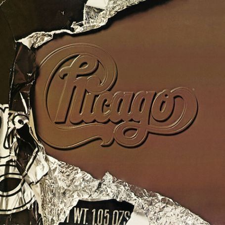
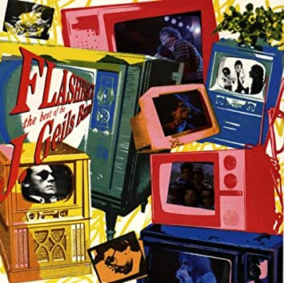

le 01/11/2020
Creedence Clearwater Revival
Creedence Clearwater Revival est un groupe de rock aux influences blues et country, originaire de Berkeley dans la région de San Francisco. Formé en 1958 à l'initiative de l'auteur, compositeur, chanteur et guitariste, John Fogerty, du batteur Doug Clifford, du bassiste Stu Cook et rapidement rejoint par le frère aîné de John, Tom Fogerty il prendra d'abord le nom des Blue Velvets puis des Golliwogs, avant de se révéler en 1967 avec l'album Creedence Clearwater Revival.
Lire l'ariticle

le 27/10/2020
Chicago
Chicago est un groupe pop rock et jazz-rock américain, originaire de Chicago, dans l'Illinois. Le nom du groupe s'inspire de The Chicago Transit Authority, nom de la compagnie gérant les transports en commun dans la ville de Chicago. C'était d'ailleurs le nom du groupe au tout début, mais ils l'ont simplifié pour ne garder que le nom de la ville après le premier album sorti en 1969.
Lire l'aritcle

le 30/09/2020
THe J. Geils Band
The J. Geils Band est un groupe de rock américain, originaire de New York mais exilé à Boston, emmené par Jerome Geils et Peter Wolf, accompagnés de Magic Dick à l'harmonica et Danny Klein à la basse. Le groupe s'agrandit ensuite avec l'arrivée de Stephen Jo Bladd (batterie) et surtout de Peter Wolf (chant), un ancien disc-jockey. Seth Justman (claviers) rejoint le groupe en 1969. Il établit vite une forte renommée scénique, où son répertoire à base de rhythm and blues énervé fait merveille.
Lire l'aritcle